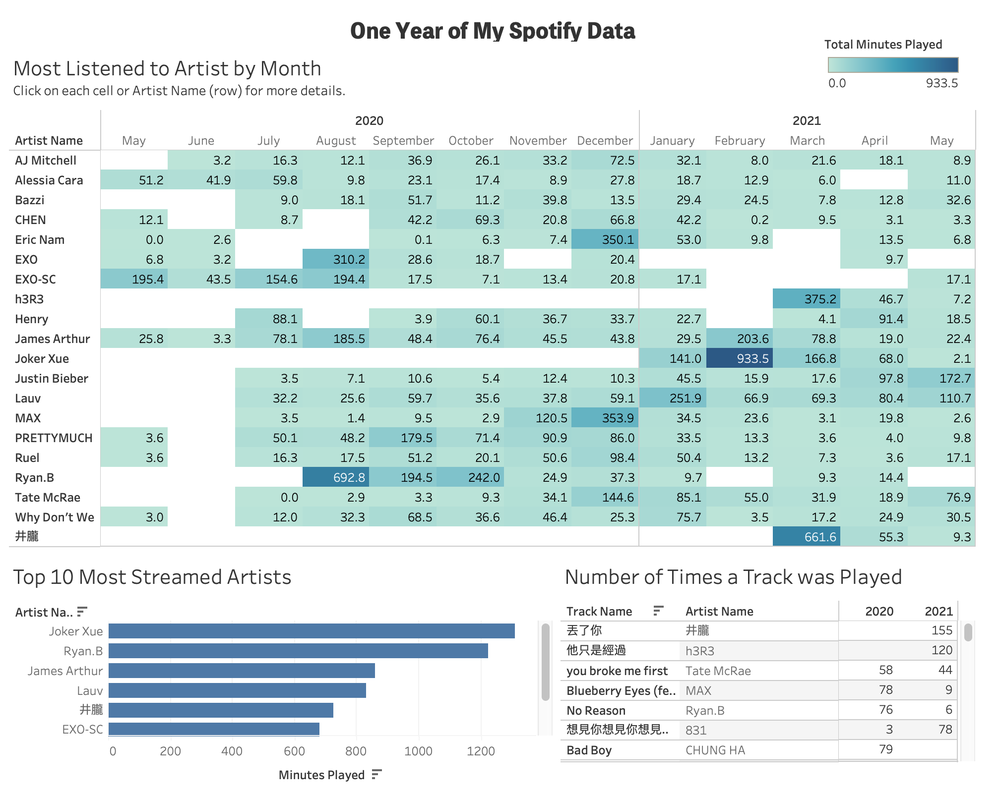
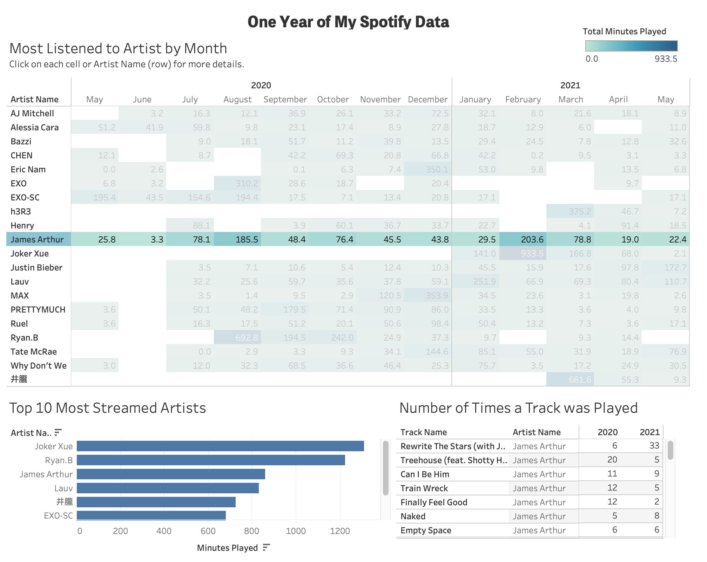
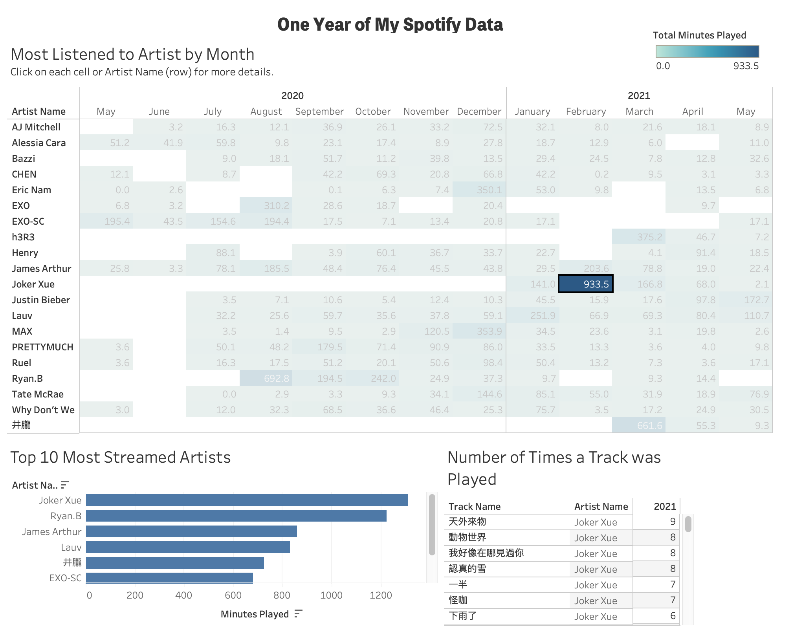

Tags: Tableau, Data Visualization, Jupyter
This project started from a desire to uncover more pattens in my music streaming data that Spotify does not present in their annual Wrapped Up. Essentially I wanted to explore how my streaming times and the music that I listened to changed with events in my life and the pandemic. From pure observation of using Spotify between my laptop and phone, I did noticed that I mostly listened to songs that were released two-three years back during this past year. To help me further investigate this, I built a Tableau Dashboard with a range of visualizations.
Timeline of data: May 2020 – May 2021.
Tools used: Tableau, Jupyter Notebook

To obtain your Spotify data, you need to request it. After a couple weeks of waiting for Spotify to sent me my data, I finally received an email to download my data from my account. The data was packaged in json files. I used Jupyter notebook and Pandas to clean the dataset and convert “msPlayed” (Stands for how many mili-seconds the track was listened) to minutes played. There is nothing wrong with mili-seconds but minutes was a bit easier to wrap my head around and compare streaming times, so I changed it.
This is my first time using Tableau for data visualization. Previously I would either visualize data in a Jupyter Notebook, R, or create web visualizations with D3 and React. Thus, I didn’t find the software difficult to use. My streaming data was only 678 KB, so I decided to keep it as a csv file and import it into Tableau using the flat file option. The first view is a heatmap of my most listened to artists by month. In the annual Wrapped-Up, Spotify does not aggregate data by month by rather by the entire year, so you can only see your top Artists for the entire year. From an user standpoint, I think Spotify should strongly consider expanding Wrapped-Up to include this data feature because users geniunely wanted see more of their data. This feature would allow users to see how their streaming habits change over time and I feel that this more exciting and interesting that seeing one’s top Artists and genres.


The second view is a simple bar chart of my all-time most streamed artists with bars sorted by the total streaming time. I created this mostly to explore if my top artist from six months ago are still my top artists today. And the answer is no. Like much of 2020, my streaming habit that year was also all over the place. The third view is a table of the number of times a track was played for the specified artist and/or month.
This project is a milestone in my data visualization journey. I was able to teach myself how to use Tableau and learn about the Spotify API. In terms of gaining some insights to my relationship with Spotify, I was a bit surprised. I knew that I was a seasonal listener from the Wrapped-Up report; meaning my streaming changes almost always lined with changes of the seasons. However, I did not know the extent of this effect. My most busiest streaming month in the second half of 2020 was August, following a very quiet summer of music listening. From memory, summer of 2020 was by far the most mundane summer since starting university. I lived in Florida during this time; the pandemic was at its height, my internship was gone, and weather unbelievably humid, which just further deterred me from going outside. In normal circumstances, all these factors would make me want to listen to more music, but the data clearly told me otherwise. Another trend that data exposed is that I can be a fanatic listeners sometimes. This trend is most evident in the months of August 2020, December 2020, February 2020, and March 2020 in which a couple artists accounted for over half of my streaming time. Overall, not only did I learned to deal with json files and use Tableau to create beautiful dashboard, I also learned more about myself and what role Spotify plays in my life than I did before this project.